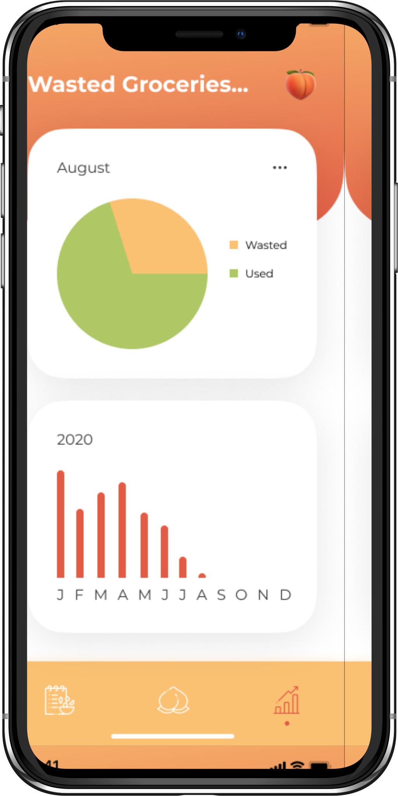

Deliverables: User Research, UI Design, Prototyping
For this project, I wanted to focus on color, visual design, and experimenting with
different icons while still maintaining a cohesive feel.
PROBLEM
How might we help people minimize food waste? This problem statement was derived from
my personal experiences. I found myself throwing away a lot of my groceries because
they expired. This not only was a waste of my own money, but also bad for the environment
because many natural resources are used to produce food such as land, energy, and water.
SOLUTION
An app that tracks when your food expires and sends you periodic reminders to eat your food.
It also suggest recipes you can make using the ingredients you have.
"The average U.S. household wastes 31.9% of food that its members obtain."
- Medical News Today, How much food does the average US household waste? by Lauren Sharkey
SCREENS

PROTOTYPE
NEXT STEPS
I'm currently taking a React Native course on Udemy, so I'd like to practice
what I learn by implementing my designs and developing this mobile app idea.